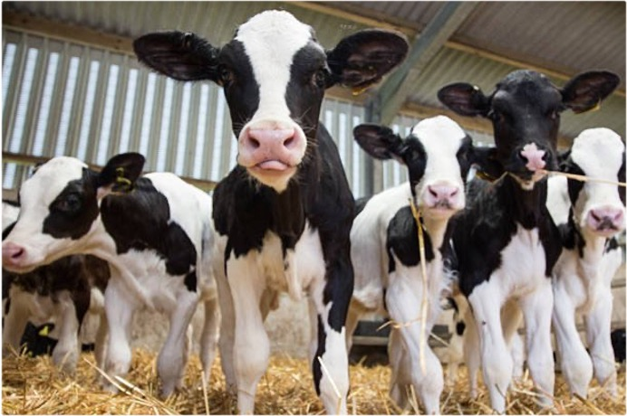
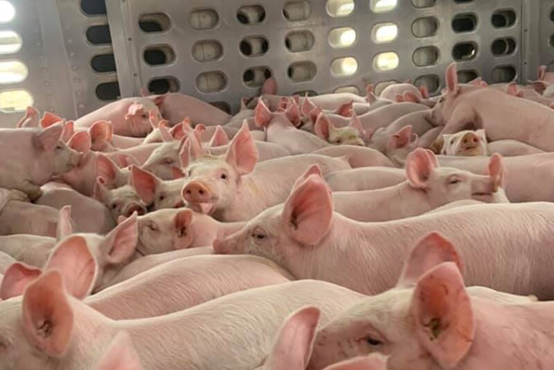
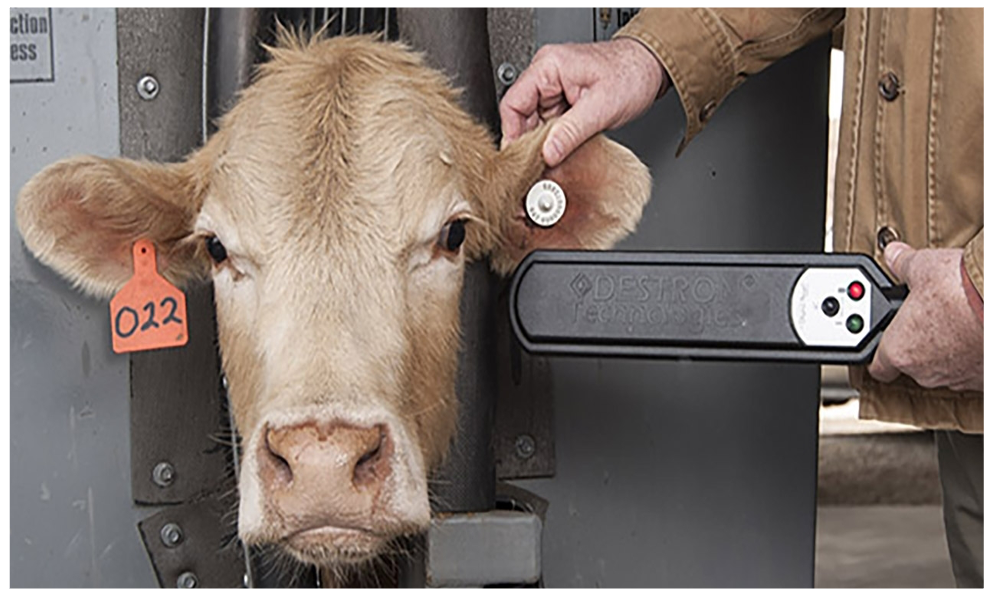
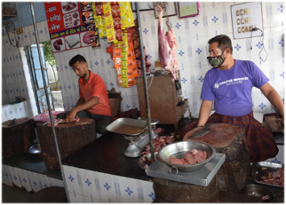

One of the greatest things about my job is how international and interdisciplinary it can be. During my career journey, I was fortunate to work with amazing teams across the globe, and with different livestock production systems.
Global research footprint
Current projects
Calf movement networks & Salmonella Dublin (US)

As part of my PhD, I am using cattle movement records to characterize US calf movement networks and build a mathematical simulation model of S. Dublin spread in the US; Using both within- and between-zip code dynamics, this tool will help us define targeted biosecurity measures and structure-aware movement interventions.
Peer-reviewed publications
- Sequeira SC et al. “Navigating complexity: Salmonella Dublin risk factors in a Midwestern US calf movement system” JDS. DOI: 10.3168/jds.2025-27055
- Sequeira SC et al. (2025). “Combining different sources of movement data to strengthen traceability and disease surveillance.” Preventive Veterinary Medicine. DOI: 10.1016/j.prevetmed.2025.106442
- Sequeira SC et al. (2025). “A systematic scoping review and thematic analysis: How can livestock and poultry movement networks inform disease surveillance and control at the global scale?” PLOS ONE. DOI: 10.1371/journal.pone.0328518
Vehicle movement networks & biosecurity (Brazil)

We’re building a vehicle–facility contact network from GPS entries across swine operations in a brazilian production system. By implementing a monitoring system for vehicles/people movements across agricultural sites, we can identify “super-spreader” farms and allow a more targeted monitoring. Our team will also track compliance by visits and flag high-risk movements. Are these originated from high-centrality facilities?
Livestock markets & Biosecurity (US)

This project is about to start (exciting!!) and consists in a large nation-wide survey to map and characterize management practices in US livestock markets; Our team is focused on identifying practical disease risk-reduction measures in U.S. markets.
Funding
USDA-NADPRP 2025 (Co-I) — “Market Matters: A Comprehensive Survey and Outreach-Based Roadmap for Enhancing Biosecurity in Livestock Markets” ($422,462)
Past projects
Livestock Traceability & ICVI Exceptions (US)

Explore state-level exceptions to currently implemented traceability documentation (ICVIs) in the US; the association between number of exceptions and cattle-related patterns at the state level; and understand potential implications for cattle traceability risks.
Peer-reviewed publications
- K. Philips et al. (2025) “Characterizing state-level patterns of interstate certificates of veterinary inspection exceptions across the United States”. Preventive Veterinary Medicine. DOI: 10.1016/j.prevetmed.2025.106593
Risk-based framework for Live Bird Shops (India)

Live bird markets (LBMs) have been associated with infectious disease risks. Live bird shops (LBSs) are more common in India. However, its role in pathogen transmission remains understudied. This Gujarat-based project investigated typical LBSs practices and assessed their potential for pathogen entry and exposure to chickens and humans.
Peer-reviewed publications
- Sequeira et al. (2025) “A risk-based framework for Live Bird Shops (LBSs) in Gujarat, India: Identifying pathogen entry and exposure risk profiles”. Preventive Veterinary Medicine. DOI: 10.1016/j.prevetmed.2025.106661